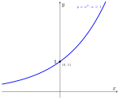
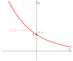
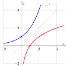
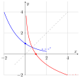
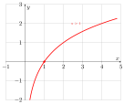
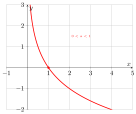
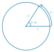

មេរៀន ស្វុីតចំនួនពិត
\(\displaystyle \bullet\) ស្វុីតនៃចំនួនពិតគឺជាអនុគមន៍លេខដែលកំណត់ពី \(\displaystyle \mathbb{N}\) ទៅ \(\displaystyle \mathbb{R}\) ។
រូបមន្ត និយមន័យ និងរូបភាពសំខាន់ៗ នៃគណិតវិទ្យាថ្នាក់ទី ១១ ទាំង ៨ មេរៀន នៅកន្លែងតែមួយ — ស្វែងរកបាន និងអានលើទូរស័ព្ទបាន។
រៀបចំដោយ៖ គ្រូបង្រៀននៃសាលារៀនជំនាន់ថ្មី (NGS) ភ្នំពេញ
រកមិនឃើញរូបមន្តដែលត្រូវនឹងពាក្យនេះទេ។
\(\displaystyle \bullet\) ស្វុីតនៃចំនួនពិតគឺជាអនុគមន៍លេខដែលកំណត់ពី \(\displaystyle \mathbb{N}\) ទៅ \(\displaystyle \mathbb{R}\) ។
\(\displaystyle \bullet\) ស្វុីតនព្វន្ត គឺជាស្វុីតនៃចំនួនពិតដែលមានតួនីមួយៗ ( ក្រៅពីតួទី 1 ) ស្មើនឹងតួមុនបន្ទាប់បូកចំនួនថេរ \(\displaystyle d\) មួយ ( ហៅថាផលសងរួម \(\displaystyle d = U_{n+1} - U_n\) ) ។
\(\displaystyle \bullet\) ស្វុីតធរណីមាត្រគឺជាស្វុីតចំនួនពិតដែលតួនីមួយៗ ( ក្រៅពីតួទី 1 ) ស្មើនឹងតួមុនបន្ទាប់គុណនឹងចំនួនថេរ \(\displaystyle q\) ដែល \(\displaystyle q \neq 0\) ។ ចំនួនថេរ \(\displaystyle q\) នេះហៅថាផលធៀបរួមស្វុីតធរណីមាត្រ ។
\(\displaystyle \bullet\) លក្ខណៈនៃសុីចម៉ា
\(\displaystyle \bullet\) រូបមន្តផលបូកសំខាន់ៗ
\(\displaystyle \bullet\) ផលសងលំដាប់ទី១ នៃស្វុីត
\(\displaystyle \bullet\) គេមានស្វុីត \(\displaystyle (a_n) : a_1, a_2, a_3, \dots, a_n\) ហើយ \(\displaystyle b_1 = a_2 - a_1, b_2 = a_3 - a_2, b_3 = a_4 - a_3, \dots, b_{n-1} = a_n - a_{n-1}\) ។ ស្វុីត \(\displaystyle (b_n) : b_1, b_2, b_3, \dots, b_{n-1}\) ហៅថាផលសងតួលំដាប់ទី \(\displaystyle 1\) នៃស្វុីត \(\displaystyle (a_n)\) ។
\(\displaystyle \bullet\) គេមានស្វុីត \(\displaystyle (a_n)\) និងស្វុីត \(\displaystyle (b_n)\) ដែលកំណត់ដោយ \(\displaystyle b_n = a_{n+1} - a_n, \; n = 1, 2, 3, \dots\) តួទី \(\displaystyle n\) នៃស្វុីត \(\displaystyle (a_n)\) កំណត់ដោយ \(\displaystyle a_n = a_1 + \sum_{k=1}^{n-1} b_k\) ចំពោះ \(\displaystyle n \geq 2\) ។
\(\displaystyle \bullet\) ផលសងលំដាប់ទី២ នៃស្វុីត
\(\displaystyle \bullet\) គេមានស្វុីត \(\displaystyle (a_n)\) ។ ស្វុីត \(\displaystyle (b_n)\) កំណត់ដោយ \(\displaystyle b_n = a_{n+1} - a_n, \; n = 1, 2, 3, \dots\) ហៅថាផលសងតួលំដាប់ទី \(\displaystyle 1\) នៃស្វុីត \(\displaystyle (a_n)\) ដែលមានតួទី \(\displaystyle n\) កំណត់ដោយ \(\displaystyle a_n = a_1 + \sum_{k=1}^{n-1} b_k\) ចំពោះ \(\displaystyle n \geq 2\) ។
\(\displaystyle \bullet\) ស្វុីត \(\displaystyle (c_n)\) ជាផលសងតួលំដាប់ទី \(\displaystyle 2\) នៃស្វុីត \(\displaystyle (a_n)\) គឺជាផលសងតួលំដាប់ទី \(\displaystyle 1\) នៃស្វុីត \(\displaystyle (b_n)\) កំណត់ដោយ \(\displaystyle c_n = b_{n+1} - b_n, \; n = 1, 2, 3, \dots\) ដែលមានតួទី \(\displaystyle n\) នៃស្វុីត \(\displaystyle (b_n)\) កំណត់ដោយ \(\displaystyle b_n = b_1 + \sum_{k=1}^{n-1} c_k\) ចំពោះ \(\displaystyle n \geq 2\) ។
\(\displaystyle \bullet\) កំណត់តួទី \(\displaystyle n\) ដោយប្រើស្វុីតជំនួយ
គេប្រើស្វុីតជំនួយ \(\displaystyle (r_n)\) ដែល \(\displaystyle r_n = \alpha \cdot n + \beta \quad (\alpha, \beta \text{ ថេរ})\) ដែលផ្ទៀងផ្ទាត់ទំនាក់ទំនងនៃស្វុីត ។ ក្នុងករណីនេះ គេជំនួស \(\displaystyle (r_n)\) ក្នុងទំនាក់ទំនងនៃស្វុីត រួចគណនា តម្លៃ \(\displaystyle \alpha\) និង \(\displaystyle \beta\) បន្ទាប់មកកំណត់បានស្វ៊ីត \(\displaystyle (r_n)\) គេនឹងធ្វើផលសង \(\displaystyle a_{n+1} - r_n\) ។
\(\displaystyle \bullet\) ទំនាក់ទំនងរវាង \(\displaystyle a_n\) និង \(\displaystyle S_n\)
ចំពោះ \(\displaystyle n \geq 2\) គេបាន \(\displaystyle S_n - S_{n-1} = a_n\) និង \(\displaystyle S_1 = a_1\) ។
\(\displaystyle \bullet\) ទំនាក់ទំនងកំណត់កំណើន \(\displaystyle a_{n+2}+pa_{n+1}+qa_n=0\)
ដោះស្រាយ \(\displaystyle a_{n+2} + p a_{n+1} + q a_n = 0\) បើទំនាក់ទំនងនៃស្វុីត \(\displaystyle (a_n)\) មានទម្រង់ \(\displaystyle a_{n+2} + p a_{n+1} + q a_n = 0\) គេពិចារណាពីចំនួន \(\displaystyle \alpha\) និង \(\displaystyle \beta\) ដែលបំពេញលក្ខខណ្ឌ \(\displaystyle \alpha + \beta = -p, \alpha\beta = q\) នោះគេបាន \(\displaystyle a_{n+2} - (\alpha + \beta)a_{n+1} + \alpha\beta a_n = 0\) ។
ទំនាក់ទំនងនេះអាចបម្លែងតាមរបៀបពីរយ៉ាងដូចខាងក្រោម ៖
\(\displaystyle a_{n+2} - \alpha a_{n+1} = \beta(a_{n+1} - \alpha a_n)\)
\(\displaystyle a_{n+2} - \beta a_{n+1} = \alpha(a_{n+1} - \beta a_n)\)
ទំនាក់ទំនងទាំង 2 ខាងលើនេះ គឺជាស្វុីតធរណីមាត្រអាចឱ្យគេរក \(\displaystyle a_n\) បាន ។ គេអាចរក \(\displaystyle \alpha\) និង \(\displaystyle \beta\) ដោយដោះស្រាយសមីការ \(\displaystyle x^2 + px + q = 0\) ព្រោះគេស្គាល់ផលបូកនិងផលគុណវា ។ សមីការ \(\displaystyle x^2 + px + q = 0\) ហៅថា "សមីការសម្គាល់នៃ \(\displaystyle a_{n+2} - (\alpha + \beta)a_{n+1} + \alpha\beta a_n = 0\)" ។
ស្វីយគុណ \(\displaystyle n\) នៃចំនួន \(\displaystyle a\) ជាផលគុណនៃ \(\displaystyle n\) កត្តា ដែលកត្តានីមួយៗស្មើនឹង \(\displaystyle a\) ។ (មានន័យថា \(\displaystyle a\) គុណនឹងខ្លួនឯងចំនួន \(\displaystyle n\) ដង) ។ កំណត់ដោយ \(\displaystyle \underbrace{ a \times a \times a \times \dots \times a}_{n \text{ កត្តា}} = a^n\) ដែល \(\displaystyle n \in \mathbb{N}\) ។
| ក. \(\displaystyle a^m \times a^n = a^{m+n}\) | ខ. \(\displaystyle (a^m)^n = a^{mn}\) |
| គ. \(\displaystyle (ab)^n = a^n b^n\) | ឃ. \(\displaystyle a^0 = 1 , (a \neq 0)\) |
| ង. \(\displaystyle \displaystyle\frac{a^m}{a^n} = a^{m-n} \ , \ (a \neq 0)\) | |
| ច. \(\displaystyle \displaystyle\left(\frac{a}{b}\right)^n = \frac{a^n}{b^n} ,(b \neq 0)\) | |
| ឆ. \(\displaystyle \displaystyle\frac{1}{a^n} = a^{-n} , (a \neq 0) , n \in \mathbb{N}\) |
\(\displaystyle \bullet\) ឫសទី \(\displaystyle n\)
ក. \(\displaystyle \sqrt[n]{a^n}=|a|\) បើ \(\displaystyle n\) គូ
ខ. \(\displaystyle \sqrt[n]{a^n}=a\) បើ \(\displaystyle n\) សេស
ក. \(\displaystyle \sqrt[n]{a}\times \sqrt[n]{b}=\sqrt[n]{ab}\)
ខ. \(\displaystyle \sqrt[n]{\dfrac{a}{b}}=\dfrac{\sqrt[n]{a}}{\sqrt[n]{b}},~~b\ne 0\)
គ. \(\displaystyle \sqrt[n]{a^m}=a^{\frac{m}{n}}\) ឃ. \(\displaystyle \sqrt[n]{\sqrt[k]{a}}=\sqrt[nk]{a}\)
ង. \(\displaystyle \displaystyle\sqrt[nk]{a^{mk}}=\sqrt[n]{a^m}\)
\(\displaystyle \bullet\) អនុគមន៍អុិចស៉្បូណង់ស្យែល
អនុគមន៍អិចស្ប៉ូណង់ស្យែលគឺជាអនុគមន៍កំណត់ដោយ \(\displaystyle f(x) = a^x\) ដែល \(\displaystyle x \in \mathbb{R}\) ហើយ \(\displaystyle a\) ជាចំនួនពិតវិជ្ជមានខុសពី 1 ។
មានន័យថា \(\displaystyle f(x) = a^x \quad \text{ដែល} \quad \begin{cases} x \in \mathbb{R} \\ a > 0 \\ a \neq 1 \end{cases}\) ។
\(\displaystyle \bullet\) \(\displaystyle a > 1\) , \(\displaystyle y = a^x\) កើនជានិច្ច


\(\displaystyle \bullet\) សមីការអុិចស៉្បូណង់ស្យែល
✎ \(\displaystyle a^x = a^y \quad \iff \quad x = y\)
✎ \(\displaystyle a^{u(x)} = a^{v(x)} \iff u(x) = v(x)\)
✎ \(\displaystyle [f(x)]^{u(x)} = [f(x)]^{v(x)}\)
\(\displaystyle \quad \iff \begin{cases} f(x) > 0 \\ [f(x) - 1][u(x) - v(x)] = 0 \end{cases}\)
\(\displaystyle \bullet\) វិសមីការអុិចស៉្បូណង់ស្យែល
១. បើ \(\displaystyle a > 1\)
| ✎ \(\displaystyle a^x \geq a^y \Leftrightarrow x \geq y\) | ✎ \(\displaystyle a^x > a^y \Leftrightarrow x > y\) |
| ✎ \(\displaystyle a^x \leq a^y \Leftrightarrow x \leq y\) | ✎ \(\displaystyle a^x < a^y \Leftrightarrow x < y\) |
២. បើ \(\displaystyle 0 < a < 1\)
| ✎ \(\displaystyle a^x \geq a^y \Leftrightarrow x \leq y\) | ✎ \(\displaystyle a^x > a^y \Leftrightarrow x < y\) |
| ✎ \(\displaystyle a^x \leq a^y \Leftrightarrow x \geq y\) | ✎ \(\displaystyle a^x < a^y \Leftrightarrow x > y\) |
៣. ទំនាក់ទំនង \(\displaystyle f(x)\) និង \(\displaystyle u(x)\) ឬ \(\displaystyle v(x)\)៖
✎ \(\displaystyle [f(x)]^{u(x)} > [f(x)]^{v(x)} \iff \begin{cases} f(x) > 0 \\ [f(x) - 1][u(x) - v(x)] > 0 \end{cases}\)
✎ \(\displaystyle [f(x)]^{u(x)} < [f(x)]^{v(x)} \iff \begin{cases} f(x) > 0 \\ [f(x) - 1][u(x) - v(x)] < 0 \end{cases}\)
\(\displaystyle \bullet\) អនុវត្តអនុគមន៍អុិចស៉្បួណង់ស្យែល
១. \(\displaystyle A = P(1 + i)^t\) (ទូទាត់ ១ ឆ្នាំម្តង)
២. បើទូទាត់ \(\displaystyle n\) ដងក្នុងមួយឆ្នាំ ៖ \(\displaystyle A = P\left(1 + \frac{i}{n}\right)^{nt}\) ។
\(\displaystyle \bullet\) អនុគមន៍ច្រាស
បើ \(\displaystyle (a, b)\) ផ្ទៀងផ្ទាត់ \(\displaystyle y = f(x)\) ហើយ \(\displaystyle (b, a)\) ផ្ទៀងផ្ទាត់ \(\displaystyle f^{-1}(x)\) នោះ \(\displaystyle f^{-1}(x)\) ជាអនុគមន៍ច្រាសនៃអនុគមន៍ \(\displaystyle f(x)\)
\(\displaystyle \bullet\) អនុគមន៍លោការីត
បើ \(\displaystyle y = a^x\) នោះគេបាន \(\displaystyle x = \log_a y \ , \ y > 0 \ , \ a > 0 \ , \ a \neq 1\) ហើយ \(\displaystyle f(x) = a^x\) មានអនុគមន៍ច្រាស \(\displaystyle f^{-1}(x) = \log_a x\) ជាអនុគមន៍លោការីតគោល \(\displaystyle a\) នៃ \(\displaystyle x\) ។
\(\displaystyle \bullet\) ករណី \(\displaystyle a = 10 \implies \log_{10} x\) ហៅថា លោការីតទសភាគ (\(\displaystyle \log x\)) ។
\(\displaystyle \bullet\) ករណី \(\displaystyle a = e \implies \log_e x\) ហៅថា លោការីតធម្មជាតិ ឬ នេពែ (\(\displaystyle \ln x\)) ។
\(\displaystyle \bullet\) លក្ខណៈនៃលោការីត
| ១. បើ \(\displaystyle a^x = n \implies x = \log_a n\) | |
| ២. \(\displaystyle \log_a b \times \log_b c \times \log_c d \times \log_d a = 1\) | |
| ៣. \(\displaystyle \log_a 1 = 0\) | ៤. \(\displaystyle \log_a b = \frac{1}{\log_b a}\) |
| ៥. \(\displaystyle \log_b a = \frac{\log_m a}{\log_m b} \; (m \neq 1, m > 0)\) | |
| ៦. \(\displaystyle \log_a (xy) = \log_a x + \log_a y\) | ៧. \(\displaystyle a^{\log_n b} = b^{\log_n a}\) |
| ៨. \(\displaystyle \log_a a = 1\) | ៩. \(\displaystyle \log_a \left(\frac{x}{y}\right) = \log_a x - \log_a y\) |
| ១០. \(\displaystyle \log_{a^\alpha} b = \frac{1}{\alpha} \log_a b\) | ១១. \(\displaystyle \log_a x^n = n \log_a x\) |
| ១២. \(\displaystyle a^{\log_a x} = x\) | ១៣. \(\displaystyle \log_{a^\alpha} b^\beta = \frac{\beta}{\alpha} \log_a b\) |
| ១៤. \(\displaystyle \log_a b \times \log_b a = 1\) |
\(\displaystyle \bullet\) ក្រាបនៃអនុគមន៍លោការីត
☞ បើ \(\displaystyle a > 1\) នោះក្រាប \(\displaystyle y = \log_a x\) កើនពីឆ្វេងទៅស្តាំ ។

☞ បើ \(\displaystyle 0<a<1\) នោះក្រាប \(\displaystyle y = \log_a x\) ចុះពីឆ្វេងទៅស្តាំ ។

\(\displaystyle \bullet\) សមីការលោការីត
បើ \(\displaystyle a>0, a\neq 1\) នោះសមីការ \(\displaystyle \log_ax=\log_ay \implies x=y\) ។
☞ បើ \(\displaystyle \log_a x_1 < \log_a x_2 \implies x_1 < x_2\)
☞ បើ \(\displaystyle \log_a x_1 > \log_a x_2 \implies x_1 > x_2\)
☞ បើ \(\displaystyle \log_a x_1 \le \log_a x_2 \implies x_1 \le x_2\)
☞ បើ \(\displaystyle \log_a x_1 \ge \log_a x_2 \implies x_1 \ge x_2\)

☞ បើ \(\displaystyle \log_a x_1 < \log_a x_2 \implies x_1 > x_2\)
☞ បើ \(\displaystyle \log_a x_1 > \log_a x_2 \implies x_1 < x_2\)
☞ បើ \(\displaystyle \log_a x_1 \le \log_a x_2 \implies x_1 \ge x_2\)
☞ បើ \(\displaystyle \log_a x_1 \ge \log_a x_2 \implies x_1 \le x_2\)

\(\displaystyle \bullet\) អនុវត្តលើអនុគមន៍លោការីត
☞ \(\displaystyle A = P(1 + i)^t\) (ទូទាត់ ១ ឆ្នាំម្តង)
☞ \(\displaystyle A = P\left(1 + \frac{i}{n}\right)^{nt}\) (\(\displaystyle n\) ដងក្នុងមួយឆ្នាំ) ។
\(\displaystyle \bullet\) ការកំណត់មុំមានទិសដៅ
☞ \(\displaystyle \overrightarrow{OP_0}\) និង \(\displaystyle \overrightarrow{OP}\) កំណត់បានមុំ \(\displaystyle \alpha + k \times 360^\circ\) , \(\displaystyle k \in \mathbb{Z}\) (\(\displaystyle k\) ជាចំនួនជុំ) ។
☞ មុំ \(\displaystyle \alpha\) និង \(\displaystyle \alpha + 360^\circ\) មានរង្វាស់ខុសគ្នា តែមានវ៉ិចទ័រគល់ និងចុងដូចគ្នា ។
\(\displaystyle \bullet\) រង្វាស់មុំគិតជារ៉ាដ្យង់
1 រ៉ាដ្យង់ គឺជាវាស់មុំដែលស្ទាក់ធ្នូមួយមានប្រវែងស្មើនឹងកាំនៃរង្វង់ កំណត់សរសេរដោយ \(\displaystyle 1\,\text{rd}\) ។

☞ \(\displaystyle 360^\circ = 2\pi\text{ rd}\) និង \(\displaystyle 180^\circ = \pi\text{ rd}\) ។
☞ \(\displaystyle 1^\circ = \frac{\pi}{180}\text{ rd}\) និង \(\displaystyle 1\text{rd} = \left(\frac{180^\circ}{\pi}\right)\) ។
\(\displaystyle \left(\overrightarrow{OP_0} \, , \, \overrightarrow{OP}\right) = \alpha + 2k\pi\) , \(\displaystyle k \in \mathbb{Z}\) (\(\displaystyle k\) ជាចំនួនជុំ) ។
☞ ពីដឺក្រេទៅរ៉ាដ្យង់ ៖ គុណនឹង \(\displaystyle \frac{\pi}{180}\) ។
☞ ពីរ៉ាដ្យង់ទៅដឺក្រេ ៖ គុណនឹង \(\displaystyle \frac{180}{\pi}\) ។
\(\displaystyle \bullet\) សុីនុស កូសុីនុស តង់សង់ និងកូតង់សង់
☞ \(\displaystyle \sin \alpha = \frac{\text{ជ្រុងឈម}\rule[-0.5em]{0pt}{1.55em}}{\text{អុីប៉ូតែនុស}\rule[-0.5em]{0pt}{1.55em}} = \frac{BC}{AC}\)
☞ \(\displaystyle \cos \alpha = \frac{\text{ជ្រុងជាប់}\rule[-0.5em]{0pt}{1.55em}}{\text{អុីប៉ូតែនុស}\rule[-0.5em]{0pt}{1.55em}} = \frac{AB}{AC}\)
☞ \(\displaystyle \tan \alpha = \frac{\text{ជ្រុងឈម}\rule[-0.5em]{0pt}{1.55em}}{\text{ជ្រុងជាប់}\rule[-0.5em]{0pt}{1.55em}} = \frac{BC}{AB}\)
☞ \(\displaystyle \cot \alpha = \frac{\text{ជ្រុងជាប់}\rule[-0.5em]{0pt}{1.55em}}{\text{ជ្រុងឈម}\rule[-0.5em]{0pt}{1.55em}} = \frac{AB}{BC}\)
☞ \(\displaystyle \sin \theta = \frac{y}{r}\) ☞ \(\displaystyle \cos \theta = \frac{x}{r}\)
☞ \(\displaystyle \tan \theta = \frac{y}{x}\) ☞ \(\displaystyle \cot \theta = \frac{x}{y}\)
☞ អ័ក្ស \(\displaystyle \overrightarrow{yy'}\) ៖ អ័ក្សស៊ីនុស ☞ អ័ក្ស \(\displaystyle \overrightarrow{uu'}\) ៖ អ័ក្សតង់សង់
☞ អ័ក្ស \(\displaystyle \overrightarrow{xx'}\) ៖ អ័ក្សកូស៊ីនុស ☞ អ័ក្ស \(\displaystyle \overrightarrow{vv'}\) ៖ អ័ក្សកូតង់សង់
តារាងតម្លៃអនុគមន៍ត្រីកោណមាត្រ៖
| កាដ្រង់ | ដឺក្រេ | រ៉ាដ្យង់ | \(\displaystyle \sin\) | \(\displaystyle \cos\) | \(\displaystyle \tan\) | \(\displaystyle \cot\) |
| \(\displaystyle 0^\circ\) | \(\displaystyle 0\) | \(\displaystyle 0\) | \(\displaystyle 1\) | \(\displaystyle 0\) | \(\displaystyle \infty\) | |
| \(\displaystyle 30^\circ\) | \(\displaystyle \frac{\pi}{6}\) | \(\displaystyle \frac{1}{2}\) | \(\displaystyle \frac{\sqrt{3}}{2}\) | \(\displaystyle \frac{\sqrt{3}}{3}\) | \(\displaystyle \sqrt{3}\) | |
| \(\displaystyle 45^\circ\) | \(\displaystyle \frac{\pi}{4}\) | \(\displaystyle \frac{\sqrt{2}}{2}\) | \(\displaystyle \frac{\sqrt{2}}{2}\) | \(\displaystyle 1\) | \(\displaystyle 1\) | |
| \(\displaystyle 60^\circ\) | \(\displaystyle \frac{\pi}{3}\) | \(\displaystyle \frac{\sqrt{3}}{2}\) | \(\displaystyle \frac{1}{2}\) | \(\displaystyle \sqrt{3}\) | \(\displaystyle \frac{\sqrt{3}}{3}\) | |
| I | \(\displaystyle 90^\circ\) | \(\displaystyle \frac{\pi}{2}\) | \(\displaystyle 1\) | \(\displaystyle 0\) | \(\displaystyle \infty\) | \(\displaystyle 0\) |
| \(\displaystyle 120^\circ\) | \(\displaystyle \frac{2\pi}{3}\) | \(\displaystyle \frac{\sqrt{3}}{2}\) | \(\displaystyle -\frac{1}{2}\) | \(\displaystyle -\sqrt{3}\) | \(\displaystyle -\frac{\sqrt{3}}{3}\) | |
| \(\displaystyle 135^\circ\) | \(\displaystyle \frac{3\pi}{4}\) | \(\displaystyle \frac{\sqrt{2}}{2}\) | \(\displaystyle -\frac{\sqrt{2}}{2}\) | \(\displaystyle -1\) | \(\displaystyle -1\) | |
| \(\displaystyle 150^\circ\) | \(\displaystyle \frac{5\pi}{6}\) | \(\displaystyle \frac{1}{2}\) | \(\displaystyle -\frac{\sqrt{3}}{2}\) | \(\displaystyle -\frac{\sqrt{3}}{3}\) | \(\displaystyle -\sqrt{3}\) | |
| II | \(\displaystyle 180^\circ\) | \(\displaystyle \pi\) | \(\displaystyle 0\) | \(\displaystyle -1\) | \(\displaystyle 0\) | \(\displaystyle \infty\) |
| \(\displaystyle 210^\circ\) | \(\displaystyle \frac{7\pi}{6}\) | \(\displaystyle -\frac{1}{2}\) | \(\displaystyle -\frac{\sqrt{3}}{2}\) | \(\displaystyle \frac{\sqrt{3}}{3}\) | \(\displaystyle -\sqrt{3}\) | |
| \(\displaystyle 225^\circ\) | \(\displaystyle \frac{5\pi}{4}\) | \(\displaystyle -\frac{\sqrt{2}}{2}\) | \(\displaystyle -\frac{\sqrt{2}}{2}\) | \(\displaystyle 1\) | \(\displaystyle 1\) | |
| \(\displaystyle 240^\circ\) | \(\displaystyle \frac{4\pi}{3}\) | \(\displaystyle -\frac{\sqrt{3}}{2}\) | \(\displaystyle -\frac{1}{2}\) | \(\displaystyle \sqrt{3}\) | \(\displaystyle \frac{\sqrt{3}}{3}\) | |
| III | \(\displaystyle 270^\circ\) | \(\displaystyle \frac{3\pi}{2}\) | \(\displaystyle -1\) | \(\displaystyle 0\) | \(\displaystyle \infty\) | \(\displaystyle 0\) |
| \(\displaystyle 300^\circ\) | \(\displaystyle \frac{5\pi}{3}\) | \(\displaystyle -\frac{\sqrt{3}}{2}\) | \(\displaystyle \frac{1}{2}\) | \(\displaystyle -\sqrt{3}\) | \(\displaystyle -\frac{\sqrt{3}}{3}\) | |
| \(\displaystyle 315^\circ\) | \(\displaystyle \frac{7\pi}{4}\) | \(\displaystyle -\frac{\sqrt{2}}{2}\) | \(\displaystyle \frac{\sqrt{2}}{2}\) | \(\displaystyle -1\) | \(\displaystyle -1\) | |
| IV | \(\displaystyle 330^\circ\) | \(\displaystyle \frac{11\pi}{6}\) | \(\displaystyle -\frac{1}{2}\) | \(\displaystyle \frac{\sqrt{3}}{2}\) | \(\displaystyle -\frac{\sqrt{3}}{3}\) | \(\displaystyle -\sqrt{3}\) |
\(\displaystyle \bullet\) សញ្ញានៃអនុគមន៍ត្រីកោណមាត្រ
| កាដ្រង់ទី I | កាដ្រង់ទី II | កាដ្រង់ទី III | កាដ្រង់ទី IV | |
| \(\displaystyle \sin\) | \(\displaystyle +\) | \(\displaystyle +\) | \(\displaystyle -\) | \(\displaystyle -\) |
| \(\displaystyle \cos\) | \(\displaystyle +\) | \(\displaystyle -\) | \(\displaystyle -\) | \(\displaystyle +\) |
| \(\displaystyle \tan\) | \(\displaystyle +\) | \(\displaystyle -\) | \(\displaystyle +\) | \(\displaystyle -\) |
| \(\displaystyle \cot\) | \(\displaystyle +\) | \(\displaystyle -\) | \(\displaystyle +\) | \(\displaystyle -\) |